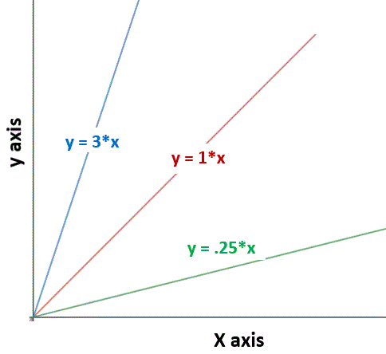

Two types of relationships between variables are proportional relationships and inversely proportional relationships.
Proportional relationship. In proportional relationships, when one variable is zero, the other is also zero. They increase together at a constant rate, resulting in a linear (line) relationship. Proportional relationships can be written as:
y ∝ x
This is the same as saying:
y = (some number)*x
Examples of directly proportional relationships between variables:
In general form, the mathematical relationship for a proportional relationship between an independent variable (x) and dependent variable (y) is:
y = m*x
m is the slope (or steepness) of the line: the slope is constant
Examples of proportional relationships:
Acceleration = (constant) * Force (net)
Distance = (constant speed) * time
Inversely proportional relationship. In inversely proportional relationships, the smallest values of one variable occur with the largest values of the other variable and vice versa. Inversely relationships can be written as:
y ∝ 1/x
This can be written as:
y = (some number, k)/x
Or,
y = k/x
Examples of inversely proportional relationships for different numbers (k's) are shown below.

Examples of inversely proportional relationships:
y = k/x
Acceleration = (constant force) / mass
Time = (constant distance) / speed


***Note for Teachers: You can access more information about this website and find other resources for science inquiry on the ISP Tutor website.
©2021 Klahr Lab, Carnegie Mellon University. All Rights Reserved
Carnegie Mellon University | Dept. of Psychology | 5000 Forbes Ave. | Pittsburgh, PA 15213 The TED project was funded in part by the Institute of Education Science (IES), Grant R305H060034, and in part by the National Science Foundation, Grant SBE035442. The ISP Tutor project is funded by IES, Grant R305A170176.
The research reported here was supported by the Institute of Education Sciences, U.S. Department of Education, through Grant R305A170176 to Carnegie Mellon University. The opinions expressed are those of the authors and do not represent views of the Institute or the U.S. Department of Education.